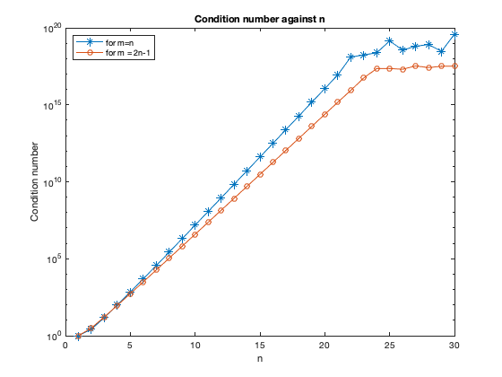

clear all;
close all;
n1 = [1:30]';
C = zeros(30,1);
C(1) = 1;
for n = 2:30
m = n;
A = vandermonde(m,n);
C(n) = cond(A);
end
C2 = zeros(30,1);
C2(1) = 1;
for n = 2:30
m = 2*n - 1;
A = vandermonde(m,n);
C2(n) = cond(A);
end
semilogy(n1,C,'-*')
hold on
semilogy(n1,C2,'-o')
title('Condition number against n');
xlabel('n');ylabel('Condition number');
legend('for m=n', 'for m = 2n-1','Location','northwest');
fprintf('For m = n, A is a square matrix, and gives large condtion numbers as n increases, compared to when \n m=2n-1. Hence the dimension of the matrix affects the condition number.\n');
function A = vandermonde(m,n)
t = zeros(m,n);
for i = 1:n
for j = 1:m
t(j,i) = ((j-1)/(m-1))^(n-i);
end
end
A = fliplr(t);
end
For m = n, A is a square matrix, and gives large condtion numbers as n increases, compared to when
m=2n-1. Hence the dimension of the matrix affects the condition number.
